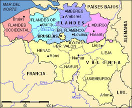

Flandes (ing. Flanders)
Territorio del norte de Europa, adyacente a Holanda. Ahora forma parte de Bélgica. Abajo, un mapa de la Bélgica moderna, con las provincias de Flandes indicadas en color. En Flandes se habla flamenco, dialecto del holandés. En España era costumbre referirse a toda la zona de los países bajos (incluidos Holanda, Luxemburgo, y Valonia, donde se habla francés) como Flandes.
